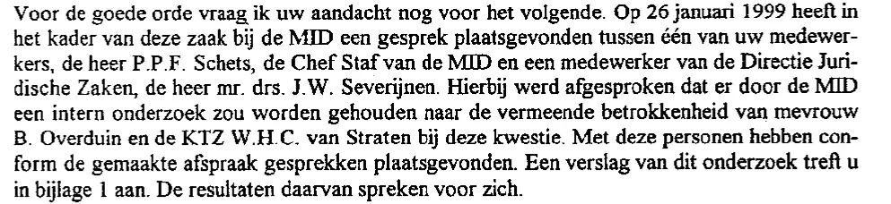

Prueba · Carta
Ministerio de Defensa al Defensor del Pueblo de los Países Bajos, 2 de marzo de 1999
El pasaje
«Para que conste, llamo además su atención sobre lo siguiente. El 26 de enero de 1999 tuvo lugar en el MID, en el marco de este asunto, una conversación entre uno de sus colaboradores, el señor P.P.F. Schets, el jefe de Estado Mayor del MID y un colaborador de la Dirección de Asuntos Jurídicos, el señor mr. drs. J.W. Severijnen. En ella se acordó que el MID llevaría a cabo una investigación interna sobre la presunta implicación de la señora B. Overduin y del capitán de navío W.H.C. van Straten en este asunto. De conformidad con lo acordado, se han mantenido conversaciones con estas personas. Encontrará un informe de esta investigación en el anexo 1. Sus resultados hablan por sí solos». Página 1, segundo párrafo. Traducido del neerlandés; el texto original figura a continuación.
Texto original
“Voor de goede orde vraag ik uw aandacht nog voor het volgende. Op 26 januari 1999 heeft in het kader van deze zaak bij de MID een gesprek plaatsgevonden tussen één van uw medewerkers, de heer P.P.F. Schets, de Chef Staf van de MID en een medewerker van de Directie Juridische Zaken, de heer mr. drs. J.W. Severijnen. Hierbij werd afgesproken dat er door de MID een intern onderzoek zou worden gehouden naar de vermeende betrokkenheid van mevrouw B. Overduin en de KTZ W.H.C. van Straten bij deze kwestie. Met deze personen hebben conform de gemaakte afspraak gesprekken plaatsgevonden. Een verslag van dit onderzoek treft u in bijlage 1 aan. De resultaten daarvan spreken voor zich.” La carta escribe el apellido «Overduin»; en otros documentos del expediente figura «Overduyn».

Por qué importa este documento
Después de que Giltay presentara una queja ante el Defensor del Pueblo de los Países Bajos (Nationale ombudsman), Barbara Overduyn, empleada del MID (servicio de inteligencia militar), lo calificó de «irritante», «inadaptado» y «completamente loco». Hizo esas declaraciones en una investigación que el MID abrió sobre sí mismo, en virtud de un acuerdo que consta en esta carta. Ese acuerdo se alcanzó el 26 de enero de 1999 entre el jefe de Estado Mayor del servicio (R. Wielinga, que era también jefe adjunto del servicio), el funcionario del Defensor del Pueblo encargado de tramitar la queja y un colaborador de la Dirección de Asuntos Jurídicos de Defensa. El ministro de Defensa adjuntó el informe de esa investigación interna como anexo 1 a esta carta, su respuesta por escrito al Defensor del Pueblo. Al hacerlo, observó: los resultados «hablan por sí solos».
Procedencia
- Documento
- Carta (extracto)
- Remitente
- Ministerio de Defensa, Dirección de Asuntos Jurídicos, Sección de Derecho Administrativo, Penal y Disciplinario, La Haya
- Destinatario
- El Defensor del Pueblo de los Países Bajos, La Haya
- Fecha
- 2 de marzo de 1999
- Referencia
- CNO 99/001, 9900134
- Asunto
- Queja del señor E.F. Giltay, Scheveningen
- Referencias
- «Uw kenmerk» (su referencia): 98.07789 003, carta del 18 de enero de 1999
- Firmado
- En nombre del ministro de Defensa, por el secretario general Barth
- Delegación de firma
- La posición se considera la del ministro de Defensa, Frank de Grave, que es responsable de ella. Por eso las citas de la sección de voces se le atribuyen a él
- Idioma
- Neerlandés
- Conservado por
- Archivo del autor
- Véase también
- Investigación interna para el jefe de Estado Mayor del MID, 12 de febrero de 1999
Citado en: el ensayo «La prohibición cayó, el libro quedó en pie» en el capítulo (3) «Lo que revela el libro: el encubrimiento en torno a Srebrenica» y en la diapositiva «Defensor del Pueblo de los Países Bajos · 1999» de la presentación «La historia en el mapa».
Ficha de prueba: https://
Documento: https://
Modificado por última vez el 13 de septiembre de 2026, consultado el 27 de noviembre de 2026.

Esta página es una ficha de prueba del libro El general del encubrimiento de Edwin Giltay y del sitio web que lo acompaña.